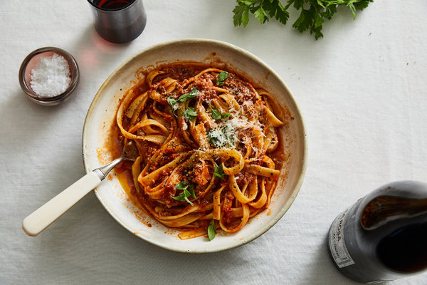

Quick Lamb Ragu

Description
A simple sauce made mostly with pantry staples, this spicy, tomatoey take on a ragù, which is traditionally long-cooked, is unapologetically lamb-forward.
Ingredients
- 2 tablespoons olive oil, plus more for drizzling
- 1 medium yellow onion, finely chopped
- 4 garlic cloves, finely chopped
- Kosher salt and black pepper
- Pinch of red-pepper flakes
- 2 anchovy fillets
- 1 pound ground lamb
- 1 (28-ounce) can crushed tomatoes
- 12 ounces cooked pasta
- A good hunk of Parmesan, for serving
Steps
- Heat 2 tablespoons olive oil in a large Dutch oven over medium heat.
Add onions and garlic, and season with salt and pepper. Cook, stirring
occasionally, until onions have become translucent, 5 to 8 minutes.
Add a pinch of red-pepper flakes and anchoives, and cook for a minute
or two, just to toast the spices and melt the anchoives.
- Add tomato paste and continue to cook, stirring occasionally so it
has a chance to stick to the bottom of the pot and caramelize a bit,
2 or 3 minutes.
- Add lamb and season with salt and pepper. Using a wooden spoon, stir
lamb until the fat starts to soften and the meat begins to break down.
Continue to cook, stirring until the lamb begins to brown and sizzle
in its own fat, 5 to 8 minutes.
- Add crushed tomatoes, stirring to scrape up any bits on the bottom of
the pot. Fill the tomato can halfway with water and swirl around to get all
the remaining tomato, then add to the pot. Season with salt and pepper
and bring to a simmer. Reduce to medium-low heat and continue to cook
until sauce is thickened and flavorful, 25 to 30 minutes.
- Serve sauce mixed into and over pasta with plenty of cheese for grating
over the top.
Back to the Recipes